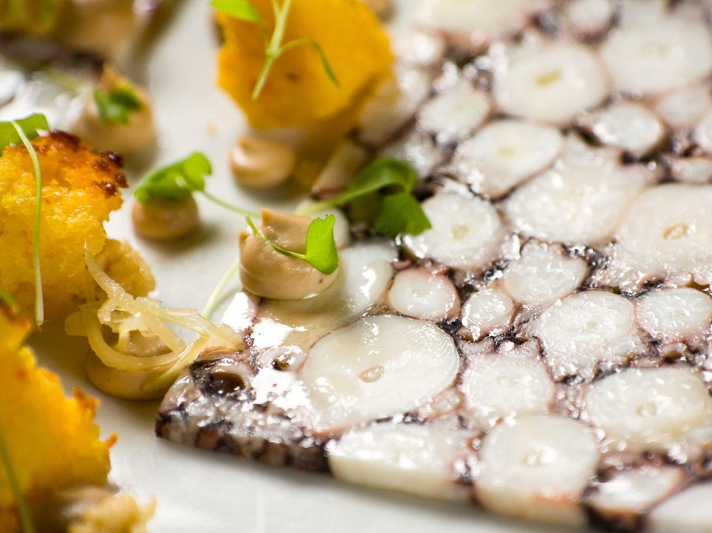

Трансглютаминаза
Трансглютаминаза – это фермент, особенно эффективный для склеивания кусочков мяса, морепродуктов и рыбы. Такое совмещение позволяет уменьшить количество обрезков, которые уже нельзя использовать, равномерно приготовить толстые стейки и придать порциям красивый внешний вид. Широко применяется трансглютаминаза в мясной промышленности и кулинарии, потому что стимулирует скрепление на клеточном уровне с помощью аминокислот лизина и глютамина, содержащихся в белках. Использование трансглютаминазы в молекулярной кухне Первым фермент в молекулярной кухне стал использовать Хестон Блюменталь, который его и популяризовал. Сейчас трансглютаминаза применяется шеф-поварами для: Как работает трансглютаминаза Трансглютаминаза обычно смешивается с мальтодекстрином или другими добавками, потому что в концентрированном виде с ней тяжело работать. В зависимости от добавки и типа белков, которые вы хотите склеить, используйте сухой метод нанесения порошка или влажный, предварительно разведя фермент в воде. Обычно необходимое количество для использования определяется весом и типом белкового продукта и составляет от 0,05% до 2%. В среднем нужно 0,75-1%. Но помните, что связывая молекулы белков, трансглютаминаза делает мясо более плотным и жестким, поэтому важно наносить минимальное нужное количество и не больше. Особенно это важно, если вы работаете с такими деликатными ингредиентами, как рыба. Нанесите трансглютаминазу на продукт и прижмите к нему другой, склеивая их. Заверните в пищевую пленку, вакуум пакет и уберите в холодное место на 4-24 часа – двум частям необходимо время, чтобы стать одним целым. Трансглютаминаза. Воздействие на здоровье человека По поводу безопасности трансглютаминазы в научном мире нет общего мнения. Но она одобрена к применению в США, Европе, Японии и многих других странах. С ферментом, как и с любым другим ингредиентом, связана возможность перекрестного загрязнения. Поэтому будьте осторожны, готовя при низких температурах. Используйте свежие продукты, склеивайте их только в холодном виде – это замедлит рост бактерий.
